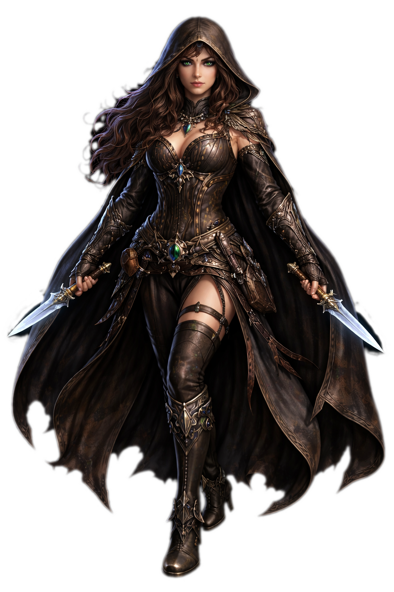
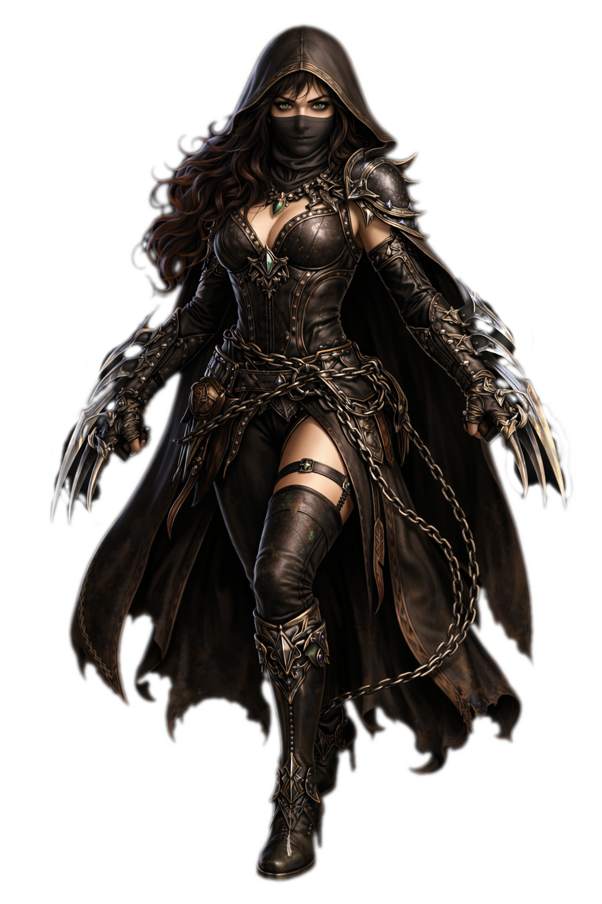

Ladino
Quando a lei caiu e a fé se quebrou, restou a astúcia.
Os Ladinos são sobreviventes que aprenderam a se mover nas sombras das ruínas, explorando caminhos esquecidos, evitando confrontos diretos e aproveitando cada oportunidade para continuar vivos.
O Ladino não confia em força bruta nem em magia instável. Ele observa, espera e age no momento certo. Em combate, ataca onde dói e desaparece antes da retaliação. Fora dele, é explorador, informante e investigador, conectando pessoas, segredos e rotas em um mundo fragmentado.
Em Elandor, viver muitas vezes significa não ser visto.
Armas: Adaga, espada curta, punhal e garras
Armadura: Média
Habilidades: Técnicas furtivas
Atributos: +1 Destreza +1 Força
Assassino
Alguns Ladinos não vivem apenas para sobreviver.
Eles escolhem matar, e se tornam Assassinos.
O Assassino é um especialista em eliminar alvos com precisão e eficiência. Ele estuda padrões, explora fraquezas e executa sem hesitação. Cada movimento é calculado, cada golpe tem intenção. Diferente do Ladino comum, o Assassino não foge do confronto, ele o encerra rapidamente.
Esse caminho exige frieza, preparo e disciplina. Quanto mais eficiente o Assassino se torna, mais distante ele fica de qualquer moral simples. Em um mundo à beira do colapso, ele é a solução silenciosa para problemas que não podem ser resolvidos à luz do dia.
Armas: Adaga, espada curta, punhal e garras
Armadura: Média
Habilidades: Técnicas furtivas
Atributos: +2 Destreza +2 Força +2 Inteligência
